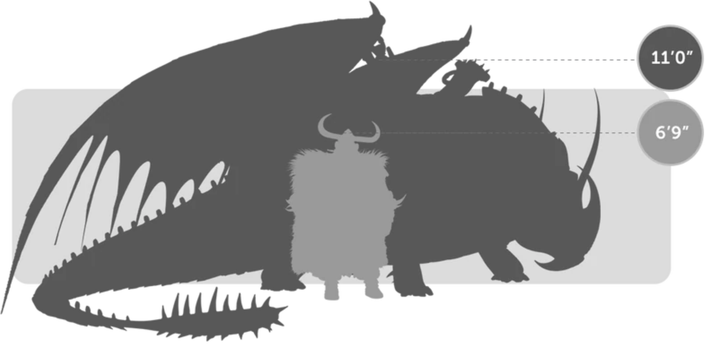
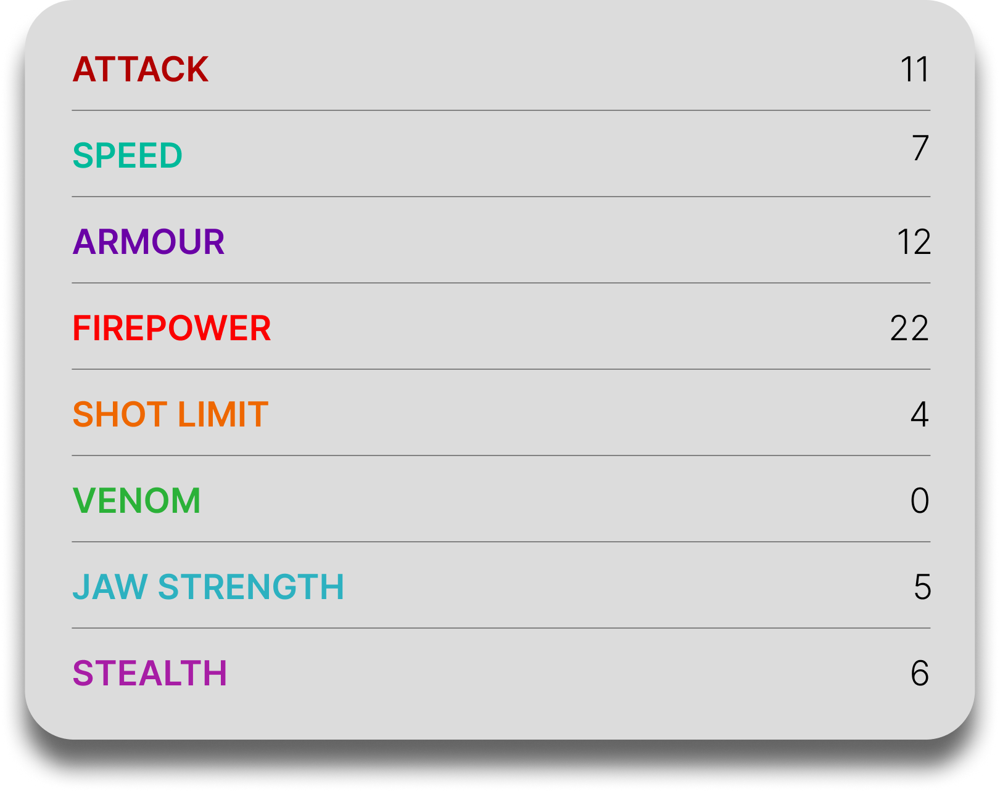

Rumblehorn
General Overview
The Rumblehorn is a medium-sized dragon belonging to the Tracker Class. Known as the bloodhound of dragons, it is famous for its extraordinary sense of smell and its ability to follow even the faintest scent across vast distances. Although it can be stubborn and immovable when calm, the Rumblehorn becomes a terrifying force when it charges, combining tracking skill, explosive firepower, and brute strength in combat.


Physical Appearance
- Body & Color: It has a bulky, muscular body with thick hide and earthy color variations often including green, brown, blue, or purple tones with a lighter underbelly.
- Head & Face: Its head is broad and heavily built, with a powerful nose shaped for tracking scents and a face that gives it a rhinoceros-like appearance.
- Appendages: It has strong legs and heavy footing, allowing it to run, charge, and hold its ground with impressive force.
- Wings & Tail: Its wings are broad enough for powerful flight, while its sturdy tail helps with balance during movement and charging attacks.
Abilities and Combat
- Explosive Fire Missiles: It can shoot long-ranged fire missiles that begin as white-hot fireballs and harden into explosive, stony projectiles on impact.
- Exceptional Tracking: Its sense of smell is so powerful that it can locate people, prey, or objects from miles away, even when the scent is weak or old.
- Head Ramming: It uses its massive head and body to charge through obstacles and enemies with rhinoceros-like force.
- Disaster Detection: It is able to sense approaching danger and environmental changes before others notice them.
- Strength and Endurance: Its tough hide, stamina, and physical power make it difficult to stop once it commits to a fight or pursuit.
- Dragon Communication: It can communicate with other dragons and react quickly to movement around it, making it hard to surprise.
Behavior and Personality
- Intelligence: It is highly intelligent and uses its senses with purpose when tracking, hunting, or detecting danger.
- Temperament: Rumblehorns are determined, stubborn, and often aggressive, especially when charging or protecting something important.
- Behavior: They frequently sniff the ground and follow scents, relying on their nose more than almost any other dragon species.
- Social Traits: While forceful by nature, they can become friendly and loyal toward their riders when handled with a gentle touch.
- Diet: Their known diet includes fish and chicken.